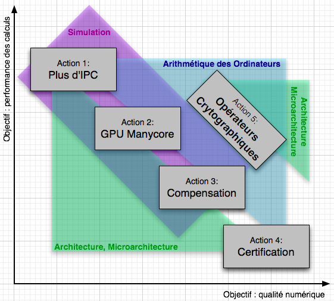

Arithmétique des Ordinateurs, Architecture, Micro-architecture des Processeurs, Simulation d'unités de calcul, Validation numérique, Analyse d'erreurs, Transformation sémantique de programmes, Analyse statique, Interprétation abstraite, Cryptographie, Calcul haute performance, Systèmes hybrides.
L'équipe DALI est constituée de 2 professeurs, 4 maîtres de conférences dont 2 HDR et 4 doctorants, post-doctorants ou ATER.
Les activités de DALI se structurent autour d'actions de recherche qui partagent l'objectif commun d'améliorer la qualité numérique et les performances du matériel comme du logiciel ainsi que la sécurité des opérateurs cryptographiques.
|  |
L'équipe DALI développe une thématique de recherche unifiée afin d'améliorer la qualité; numérique et la haute performance des calculs. DALI permet l'interaction, rare en France au sein d'une même équipe, d'experts en architecture et micro-architecture, simulation et compilation et arithmétique des ordinateurs.
Côté performances, nous nous intéressons plus particulièrement à la multiplication des coeurs (parallélisme de tâches) et à l'augmentation du parallélisme d'instructions. La qualité numérique des applications de calcul scientifique et la sûreté de fonctionnement d'applications embarquées critiques dépendent crucialement de la maîtrise des effets de la précision finie des calculs-et de l'arithmétique flottante en particulier. Il s'agit lors de contrôler et valider les calculs (algorithmes, codes) mais aussi d'améliorer et optimiser la précision numérique des calculs et des résultats. Certaines applications, en calcul scientifique en particulier, nécessitent d'améliorer la qualité numérique des applications sans pour autant sacrifier la rapidité de l'exécution. Ainsi se rejoignent amélioration de la performance et de la qualité numérique.